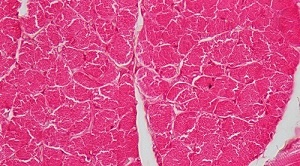
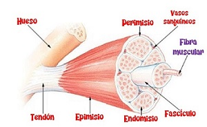
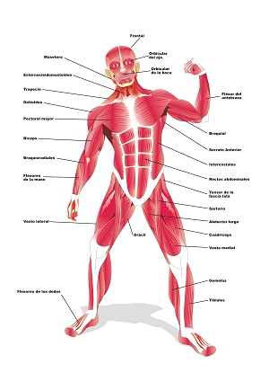
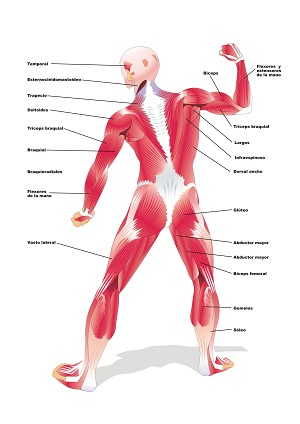

El sistema muscular es el conjunto de músculos que realizan todos los movimientos voluntarios e involuntarios que lleva a cabo nuestro cuerpo. Este sistema muscular está formado por más de 650 músculos.
La función del sistema muscular es producir el movimiento gracias a los estímulos nerviosos que recibimos del sistema nervioso.
Los músculos son tejidos elásticos que tienen la capacidad de contraer y relajarse para poder producir movimientos.
A continuación, puedes ver la imagen de un músculo seccionado a vista de microscopio.

El músculo está compuesto por muchas fibras musculares. La unión de todos ellas forman el músculo en sí mismo.
A continuación, puedes ver la composición de un músculo con sus fibras musculares, tal y como se ha explicado anteriormente.

El tejido muscular tienen cuatro propiedades importantes:
- Puede recibir impulsos eléctricos del sistema nervioso y generar movimientos como respuesta.
- Tiene la capacidad de contraerse.
- Tiene la capacidad de extenderse más de su tamaño original, sin sufrir ningún daño.
- Tiene la capacidad de volver a su tamaño original, tras una contracción o extensión.
Los músculos pueden tener diferentes tamaños y formas, en función de su ubicación y la función que realicen.
A continuación, puedes ver una imagen de todos los músculos del cuerpo humano tanto en la visión frontal como posterior.
|
 |
 |
Para mantener una adecuada salud de nuestro sistema muscular, debemos:
- Realizar un adecuado calentamiento antes de hacer ejercicio.
- Realizar un adecuado estiramiento de los músculos después de realizar ejercicio físico.
- Conocer nuestras propias posibilidades físicas y no excedernos.
- Realizar ejercicio físico de manera continuada.
- Mantener una dieta rica y equilibrada evitando las grasas.
- Mantener posturas correctas para evitar contracturas musculares.